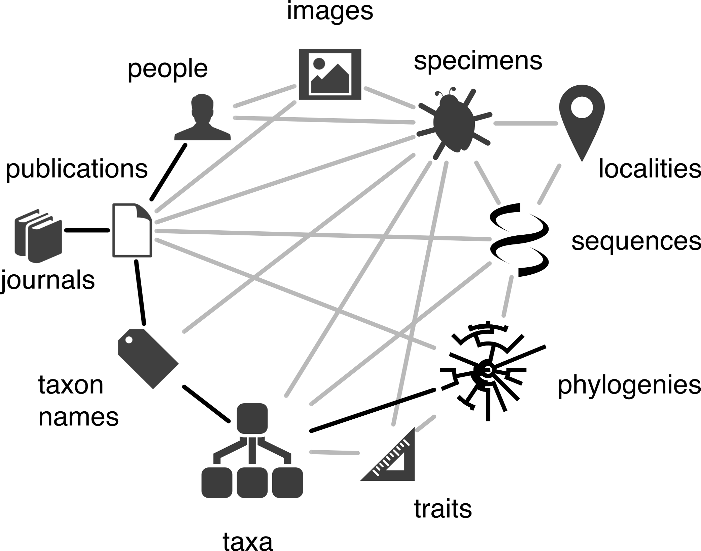

TL;DR; In order to build a usable biodiversity knowledge graph we should adopt JSON-LD for biodiversity data, develop reconciliation services to match entities to identifiers, and a use a mixture of document and graph databases to store and query the data. To bootstrap this project we can create wrappers around each biodiversity data provider, and a central cache that is both a document store and a simple graph database. This power of this approach should be showcased by applications that use the central cache to tackle specific problems, such as augmenting existing data.
One way to think about "core" biodiversity data is as a network of connected entities, such as taxa, taxonomic names, publications, people, species, sequences, images, collections, etc.

Many tasks in biodiversity informatics correspond to tracing paths in this "knowledge graph". For example, someone wanting to do a phylogeographic analysis might want to go from a molecular phylogeny to the sequences used to build that tree, to the voucher specimens for those sequences, and then to the collecting localities in order to be able to place each tip of the tree on a map. This document sketches out some of the problems in building the biodiversity knowledge graph.
Traditional semantic web approaches emphasise everything having a unique HTTP URI identifier that can be resolved to yield data in RDF. That RDF would be rendered in XML, be stored in a triple store, and queried using SPARQL. The RDF might employ ontologies that support reasoning. Each of these components can be difficult (or, at least, time consuming) to implement individually, taken together is has so far proved to be a bridge too far for the biodiversity informatics community. We have had RDF being served for a decade now (principally by taxonomic name databases) and yet we are no nearer to having a knowledge graph, or beng able to answer interesting questions using the data we are mobilising using RDF.
In this document I argue that we can create a knowledge graph by cutting several Gordian knots. Instead of RDF as XML we can use JSON-LD, which is much more human-friendly (and, after all, developers are people too). Instead of ontologies and inference we use controlled vocabularies, and wherever possible use ones that have wider use than just in our field (for example, schema.org). Lastly, we make use of NoSQL databases such as document stores (e.g., CouchDB), and graph databases (e.g., Neo4J), coupled with full text search (e.g., Elastic Search) to create a knowledge graph. As an example of the power of this more flexible aproach, see Building and Using a Knowledge Graph to Combat Human Trafficking.
JSON has become the lingua franca of data. It's a simple way to represent data that works well with client-side code in web browsers. Here is an example:
This simple key-value format will be familiar to anyone writing programs that consume web services (such as those provided by GBIF), and JSON has become so ubiquitous that there are databases using JSON as their data format (e.g., CouchDB). One limitation, however, is that it lacks any information on the semantics of the keys. For example, if we have JSON from two different sources, and both use the key "name" how do we know that they mean the same thing? RDF solves this problem by using vocabularies with terms defined by URIs. Typically this comes at the cost of readability, but JSON-LD minimises this by having all the definitions in the context. The JSON-LD below is based on the JSON above, but we've added @context to define the terms, and @id to provide a unique identifier.
The JSON-LD shown above can be rendered in another RDF format, such as nquads:
Hence we can move between a typical JSON document that we can use in a web interface, or as input into a JSON document store, and a classical triplet format.
Existing vocabularies with broad acceptance outside biodiversity should be used as much as possible, such as schema.org.
There are numerous controlled vocabularies and ontologies for entities of interest to a given domain or field of study. At the same time, major search engines are promoting schema.org as a standard vocabulary for marking up web pages. It makes sense to use this for at least two reasons. The first is that it covers many entities such as people, museums, and organisations that are often not included in domain specific vocabularies. Secondly, there is a strong incentive to include structured makeup in web pages in order to improve discoverability by search engines, so that efforts to provide JSON-LD using schema.org can be part of a larger goal of increasing the visibility of a given institution's web site.
In biodiversity informatics the best known vocabulary is Darwin Core (http://rs.tdwg.org/dwc/terms/) (see also Darwin Core: An Evolving Community-Developed Biodiversity Data Standard) which provides an extensive set of terms for occurrence data. The Darwin Core RDF Guide adds a further set of terms based on the distinction between terms that have literal values (such as numbers and strings) and those that refer to other objects. In the context of the knowledge graph this seems to add more complexity than is necessary, especially if we want to keep occurrence JSON-LD as close to the JSON returned by the GBIF web services as possible.
In the same spirit of keeping things simple, there is a tendency to retain some information about namespaces for each key in the form of a prefix. For example, in the document below the title key is of the form "dc:title" where the "dc:" prefix refers to the Dublin Core namespace "http://purl.org/dc/terms/". This adds unnecessary complexity (why do we need to know that it's a "dc" title?).
The next document shows the key "title" without any namespace prefix.Within JSON-LD identifiers should be represented as CURIEs following existing practice in bioinformatics. CURIEs specific for biodiversity informatics sources should be created. Wherever possible URIs for identifiers should use identifiers.org.
Once we think in terms of a graph then it is crucial that we can unambiguously identify the vertices in the graph. Each connection ("edge") in the graph is simply a pair of vertices. Furthermore, if we have globally recognised identifiers for the vertices we can distribute the problem of building the graph across numerous, independent sources. If we all agree that, say, a paper's unique identify is a DOI, then we can independently connect that paper to other papers (the citation graph), to authors, to specimens, to cited sequences, etc. Hence we can only make the task decentralised if we have global identifiers.
Few topics have caused as much grief in biodiversity informatics as identifiers. Arguments about which technology to use (e.g., HTTP URIs versus LSIDs versus DOIs), difficulties agreeing on what gets an identifier, and a lack of obvious immediate value from assigning identifiers have all contributed to this situation. There has also been a degree of wishful thinking regarding the benefits of identifiers. Identifiers only have value in the context of tools and services that use them, simply minting identifiers and hoping value will emerge spontaneously is, at best, naive. For example, the academic publishing industry has settled on DOIs to identify publications. The value that people get from these identifiers, such as consistent resolution, easy access to metadata, automatically formatted citations for articles, citation counts, easy discovery of articles, and altmetrics, all require an underlying infrastructure, without which the DOI itself is of little use.
Identifiers as URIs are not particularly stable as the mechanism of resolution can be subject to change. For example, the DOIs were originally recommend to be displayed in the form doi:<doi>, such as doi:10.1007/978-3-319-25010-6_12, but subsequently CrossRef recommended using the HTTP prefix http://dx.doi.org (see CrossRef Revises DOI Display Guidelines), so the DOI would be displayed as http://dx.doi.org/10.1007/978-3-319-25010-6_12. But the DOI can also be displayed as http://doi.org/10.1007/978-3-319-25010-6_12 (i.e., without the "dx." prefix), hence we have multiple ways to write the same identifier. Any querying that depends on exact string matching of identifiers will fail to recognise these strings as being the same. One way to insulate ourselves against this is to use indirection, for example by using on URIs that don't change as a proxy for the identifiers. To illustrate, the identifiers.org service (Identifiers.org and MIRIAM Registry: community resources to provide persistent identification) represents a DOI as http://identifiers.org/doi/10.1093/nar/gkr1097 which means we can ignore whether the DOI should be written as http://dx.doi.org or http:/doi.org.
In the case of JSON-LD we can simplify further by representing identifiers as CURIEs, so that a DOI becomes "DOI:10.1093/nar/gkr1097". This reflects the long standing convention in bioinformatics of representing identifiers in the form database_abbreviation:record_identifier (see for example the Life Science Resource Name Project). By adopting this approach we keep identifiers human-readable, easy to index, and stable. For an example of this apporach see BioContext: JSON-LD Contexts for Bioinformatics Data.
It has been said that there are only three numbers in computer science: 0, 1, and n, and this is true of identifiers. Typically an item either has no digital identifier, or it has many. Rarely are we fortunate to have a single, widely recognised identifier. This means that we will always be faced with having to map between identifiers for the "same" thing. This is a task that <sameAs> attempts, and more specifically for the biodiversity domain, BioGUID.org.
Multiple identifiers raise the question of how do we write queries that will function when not every relevant object will have the same identifier.
At the same time, having multiple identifiers can be an opportunity to increase the amount of information in the knowledge graph. Projects such as Wikidata are a potential treasure trove of crosslinks to other identifiers for people, journals, etc.
Priority should be given to assembling data sets that crosslink different identifiers.
Given that the knowledge graph requires connections between different entities (the edges connecting the vertices), in many ways the most important data sets are those that make these connections. Many efforts to move to machinable-readable data ignore this, as a consequence we have lots of data that cannot be easily connected to other data. Many data sets contain attributes of a single class of entity (e.g., a specimen or a publication), and if other entities are mentioned they are identified using local identifiers (e.g., local identifiers for authors).
Hence we will need to create data sets that act as "glue" to cross link different datasets. For example, a taxonomic dataset should include bibliographic identifiers to link to the literature, not just simply include "dumb" text string citations. Many sequences in GenBank are associated with publications that aren't indexed by PubMed, and hence lack a bibliographic identifier (even if one exists). Adding these to the sequences will connect sequences to publications in the knowledge graph.
Develop a standard API and response format for extracting entities from text.
Text in scientific papers and databases often mention entities such as taxonomic names, specimens, localities, and data items such as DNA sequences. There are various tools for identifying taxonomic names in text (e.g., http://doi.org/10.1186/1471-2105-13-211 and Global Names Recognition and Discovery.
It would be desirable to have a suite of tools that can take text (in various forms, such as plaint text, XML, HTML, PDF) and return a list of possible entities with their location indicated in the text. This can be seen as part of the more general problem of annotating text, and hence formats such as that used by the now defunct Readmill could be the basis of a common format.
{
position: 0.738,
pre: "i am the text just before the highlighted text",
mid: "i am the highlighted text",
post: "i am the text just after the highlighted text",
xpath: {
start: "//*[@class='starttag']",
end: "/*[@class='endtag']",
},
file_id: "chapter-2"
}
Note the use of various methods to mark the location in the text (absolute position, position relative to surrounding text, and path to location document). We can use that information to "mark up" an entity in the text when it is displayed. Adopting a format that is compatible with annotation tools (such as hypothes.is) means we can view entity extraction as part of the more general annotation problem, and combine automated markup with human annotation.
Services for mapping strings to things should adopt the Reconciliation Service API standard.
Many entities are represented in databases by strings rather than identifiers, hence a key task in building the knowledge graph is to map these strings onto identifiers.
The now defunct database FreeBase developed a standardised Reconciliation Service API which is supported by the widely used tool OpenRefine (itself originally a product of the same company, Metaweb, that produced FreeBase, see Wikipedia article on OpenRefine). This API has also been adopted by Wikidata. For some examples of OpenRefine use see Using Google Refine and taxonomic databases (EOL, NCBI, uBio, WORMS) to clean messy data and Reconciling author names using Open Refine and VIAF.
Services needed include (but need not be limited to):
Wikidata provides a tool to map strings to Wikidata items.
This is a wrapper around the CrossRef search API. Enter a bibliographic citation and it attempts to find the corresponding DOI.
Create a graph database for the knowledge graph. There can be multiple instances of knowledge graphs, but a single graph of global scope will have the greatest impact.
There are several arguments for building a single, centralised knowledge graph.
Instead of building a monolithic system there is considerable scope for developing "microservices", that is each component required to construct the knowledge graph can be a standalone service that does one thing. If the inputs and outputs are well defined, this means we can easily distribute the task of building the infrastructure, as well as swap in and out alternative implementations of a specific service.
For every supported identifier type we need a resolver that can take the identifier and retrieve data. This means supporting LSIDs, DOIs, and URLs. Some resolvers will be generic, some will have to be programmed to a specific API.
Few, if any, biodiversity data providers serve data in JSON-LD. Until such time as JSON-LD support becomes widely adopted the obvious strategy is to provide wrappers for each provider, in much the same way that the Bio2RDF project wraps numerous bioinformatics sources to produce RDF (Bio2RDF: Towards a mashup to build bioinformatics knowledge systems).
For existing providers that serve RDF (such as databases with LSIDs) we can simply transform the RDF/XML to JSON-LD. For other sources we may need to do some additional work.
Pick an identifier to see a JSON-LD version of the corresponding data. This is "live".
The JSON-LD wrappers above use the following data models.
For most objects the JSON-LD will contain identifiers to other, linked, objects. For example an article will link to a journal, an ORCID profile will links to articles, a DNA sequence will link to one or more publications and a specimen voucher. These will all need to be added to the knowledge graph. One approach is to have the resolvers put these additional identifiers into a queue of identifiers to resolve. We then have a process that pulls identifiers from that queue and resolves them. In order to avoid crawling the entire graph of data we could simply resolve each identifier in the queue without placing any linked identifiers on the queue. In other words, when resolving an identifier directly we get the entities that are one edge away in the graph and put these into the queue, but when we resolve identifiers in the queue we defer resolution of the additional identifiers until a user or process specifically asks for that identifier to be resolved. In a proof of concept tool we could implement this queue using semaphore functions (e.g., Creating a Message Queue in PHP Without External Libraries).
In addition to resolving individual identifiers, we need mechanisms to import data in bulk. The biodiversity community has settled on Darwin Core Archive as a standard data format, so we need a parser to convert Darwin Core into JSON-LD. Another obvious format is triples, which is effectively a three (or four if we include nquads) column table.
Bulk data import also provides a mechanism to give credit to data providers if the data is, for example, published as a data paper or uploaded to a repository such as Zenodo.
One obvious approach to building the knowledge graph is to use a triple store. This has the advantage of being the native database for triples, but it might not have all the functionality required.
Graph databases, such as Neo4J are another option. These make modelling graphs straightforward (and fun), and support sophisticated queries. But it involves committing to a particular implementation. Other graph databases that could be explored include Cayley.
JSON-based document stores such as CouchDB can store JSONB-LD natively, and can also do some graph-like queries. By storing {s, p, o}; triples in the six possible combinations ({s, p, o}, {s, o, p}, {p, s, o}, {p, s, o}, {o, s, p}, and {o, p, s}) it is possible to support graph queries. For a live demonstration and slideshow on hexastores see How to Cook a Graph Database in a Night, see also hexastore.
Lastly, full-text search is also a very powerful tool, and search engines such as Elastic Search have powerful capabilities. Some products such as Cloudant combine CouchDB and Lucene to create fast, searchable document stores.
It is likely that a number of complementary databases will be useful. We need to think beyond triple stores if we are to be able to support all the kinds of queries needed.
Applications to demonstrate the practical value of the knowledge graph.
We need a set of applications to demonstrate the value of the knowledge graph, and also to help frame the kinds of queries we need to support. These applications should be simple, easy to use, and actually useful. Here are some possibilities.
A visitor to any biodiversity data web page can discover further information by clicking on a bookmarklet which displays a popup window that augments the data on display. For example, a visitor to a GBIF occurrence page could see what papers cite that specimen, and the DNA sequences for which it is a voucher. This idea was sketched out in Rethinking annotating biodiversity data, and could also be implemented as a Chrome extension.
A researcher with an ORCID uses that identifier to log into a web site that then shows the researcher what species they have published. This relies on links between ORCID for person, DOI for publication, and LSID for taxonomic name. Could be used to explore idea of experts being able to self identify their area of expertise, especially in the context of annotating and cleaning data. An expert becomes easy to recognise without them having to say "I am an expert".
iSpecies is a simple mashup of different sources of information, such as GBIF, EOL, CrossRef, TreeBASE, etc. What happens when we extract the identifiers from these sources, augment them and use that information to generate a synthesis (rather than an aggregation)? For example, the same paper may appear in different data sources, there may be connections between specimens, sequences and papers that aren't uncovered by a simple mashup. Conceptually the goal would be to create a subgraph of the knowledge graph corresponding to the original search term (typically a species or genus name) and compare that with the simple mashup approach.
If we can link specimens to outputs, such as publications and sequences, and link the specimens back to their host repository then we can compute measures of the "impact" of that collection.
The Bouchout Declaration includes numerous signatories pledging to open their data, but we have no means of determining to what extent they have done so. By linking collections and journals to institutions we can ask questions such as "is this institution's data in GBIF?", and "are this institution's in-house journals open access?".
A simple exploratory tool is to take genetic sequence and run the BLAST tool to locate similar sequences (for example (Phyloinformatics BLAST tools). These sequence may be linked to literature and specimen vouchers, which could be used to enrich the results (e.g., by adding geographic localities to the sequences).